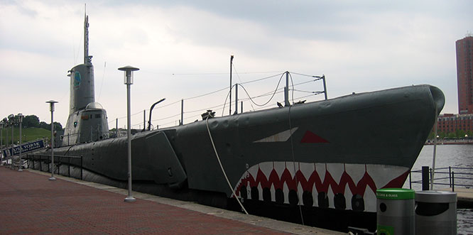

Downtown Baltimore
Check out the USS Torsk at Baltimore's histroic Maritime Museum
Exploring the Venetian
Enjoy the best gondola ride on this side of the Atlantic Ocean.
London After Dark
Enjoy the pubs along the river Thames & get spectacular view from the London Eye.
Mount Rushmore
Marvel at the majestic beauty of the Black Hills and come face to face with American history.